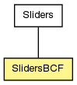

anar
Class SlidersBCF
java.lang.Object
 anar.Sliders
anar.SlidersBCF
anar.Sliders
anar.SlidersBCF
public class SlidersBCF
- extends Sliders

| Fields inherited from class anar.Sliders |
borderMargin, changed, changeList, font, fontSize, globalMax, globalMin, goo, leftMargin, p5, paramList, sliderStiffness, updateList |
| Method Summary |
void |
controllerIn(Controller controller)
This method is called every time a new CC (ControllerChange) is incoming. |
void |
draw()
|
static int |
getBCFinput()
|
static int |
getBCFoutput()
|
static boolean |
isProMidiFound()
|
static void |
searchBCF()
|
static void |
setMidiIO(int in,
int out)
Set in|out midi channels for the slider device. |
static void |
setMidiIO(int ch,
int in,
int out)
Set Midi inputs and outputs to be used with OOG |
| Methods inherited from class anar.Sliders |
add, add, add, add, add, addToSlidersMain, get, getEnd, getEnd, hidden, hide, isChanged, isChanged, isUpdated, isUpdated, remove, remove, remove, reset, show, size, toString |
| Methods inherited from class java.lang.Object |
equals, getClass, hashCode, notify, notifyAll, wait, wait, wait |
midiInput
public static int midiInput
midiOutput
public static int midiOutput
midiCh
public static int midiCh
SlidersBCF
public SlidersBCF()
SlidersBCF
public SlidersBCF(java.util.ArrayList<Param> vals)
SlidersBCF
public SlidersBCF(Param[] vals)
SlidersBCF
public SlidersBCF(Parametric myObj)
SlidersBCF
public SlidersBCF(Sliders s)
- Parameters:
s -
searchBCF
public static void searchBCF()
controllerIn
public void controllerIn(Controller controller)
- This method is called every time a new CC (ControllerChange) is incoming.
This is a callback (registered methods) from proMidi.
- Parameters:
controller - CC msg from ProMidi
draw
public void draw()
- Overrides:
draw in class Sliders
- See Also:
Sliders.draw()
setMidiIO
public static void setMidiIO(int ch,
int in,
int out)
- Set Midi inputs and outputs to be used with OOG
- Parameters:
ch - Midi channel 0 = ch1in - MidiIn from the list (system dependent)out - MidiOut from the list (ystem dependent)
setMidiIO
public static void setMidiIO(int in,
int out)
- Set in|out midi channels for the slider device.
Channel -1 is given by Default.
- See Also:
setMidiIO(int,int,int)
getBCFinput
public static int getBCFinput()
- Returns:
- channel of the current BCF input. -1 if not found
getBCFoutput
public static int getBCFoutput()
- Returns:
- channel of the current BCF output. -1 if not found
isProMidiFound
public static boolean isProMidiFound()